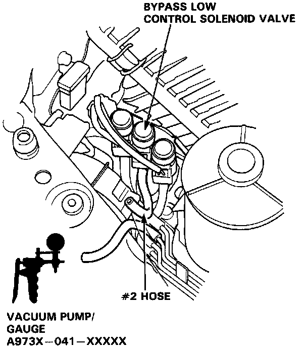
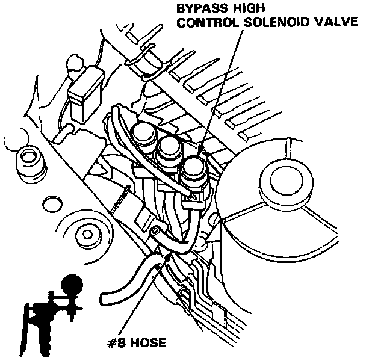

Variable Induction Control Valve: Testing and Inspection
Bypass Low Control Valve1. Disconnect the # 2 hose from the vacuum hose manifold and attach a vacuum pump to the vacuum hose manifold.

2. Apply vacuum and verify that the diaphragm holds vacuum and that as the vacuum is applied and released the diaphragm rod moves in and out.
- If the diaphragm does not hold vacuum or the diaphragm rod does not move in and out, replace the Bypass Control Valve and retest.
Bypass High Control Valve
1. Disconnect the # 8 hose from the vacuum hose manifold and attach a vacuum pump to the vacuum hose manifold.

2. Apply vacuum and verify that the diaphragm holds vacuum and that as the vacuum is applied and released the diaphragm rod moves in and out.
- If the diaphragm does not hold vacuum or the diaphragm rod does not move in and out, replace the Bypass Control Valve and retest.